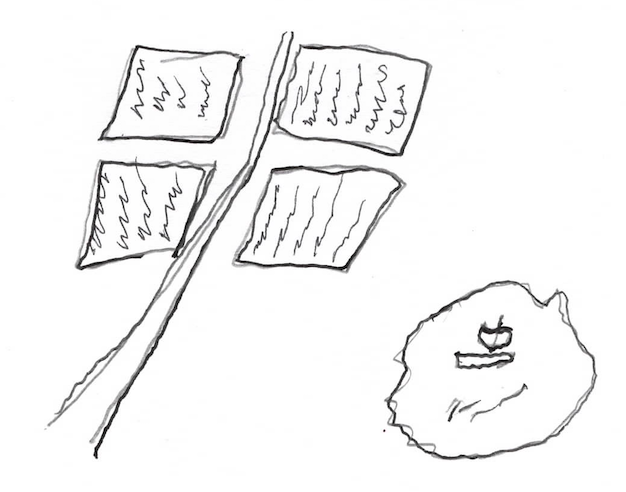
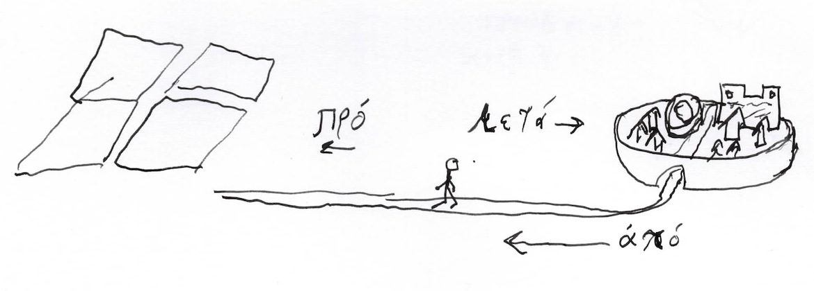
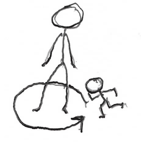
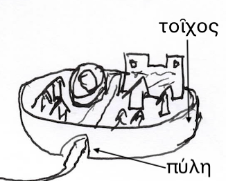

ἡ ὄδος πρὸς τοὺς ἀγροὺς ἄγει, οὑ πρὸς τὴν θάλασσαν.

ποῦ ἐστιν ὁ Γρηγόριος; ὁ Γρηγόριός ἐστιν ἐν τῇ ὁδῷ. ἀλλὰ ποῖ ἔρχεται ὁ Γρηγόριος; πρὸς τοὺς ἀγροὺς αὐτοῦ ἔρχεται. πόθεν δὲ ἔρχεται ὁ Γρηγόριος; ἀπὸ τῆς οἰκίᾱς αὐτοῦ, καὶ ἀπὸ τῆς Ἀντιοχείᾱς. ἡ πόλις ἡ Ἀντιοχεία ἐστὶ μετὰ τὸν Γρηγόριον. οἱ ἀγροὶ κεῖνται πρὸ αὐτοῦ. οὗτος ὀχεῖται ἀπὸ τῆς πόλεως πρὸς τοὺς ἀγρούς, ἐπὶ ἵππου. ὁ μὲν ἵππος φέρει αὐτόν. ὁ δὲ ὀχεῖται ἐπὶ ἵππου. νῦν δὲ μεταξὺ τῆς πόλεως καὶ τῶν ἀγρῶν ἐστιν.
οἱ ἀγροὶ τοῦ Γρηγορίου οὐ πόρρω ἀπὸ τοῦ ἄστεως, ἀλλὰ ἐγγύς ἐστιν. ἡ μὲν οὖν ὁδός, ἣ πρὸς τοὺς ἀγροὺς ἄγει, οὐκ ἐστιν μακρᾱ́, ἀλλὰ μῑκρᾱ́. ἡ δὲ ὁδὸς ἀπὸ τῆς Ἀντιοχείᾱς πρὸς Σελεύκειαν ἐν Πιερίᾳ μακρᾱ́ ἐστιν. τί ἐστι Σελεύκεια ἐν Πιερίᾳ; ἔστι πόλις μῑκρᾱ́, ἐγγὺς τῆς θαλάσσης.
οὐχ οὕτως μακρᾱ́ ἐστιν ἡ ὁδὸς πρὸς τοὺς ἀγροὺς τοῦ Γρηγορίου, ὡς ἡ πρὸς τὴν Σελεύκιαν ὁδὸς. ἀλλὰ οὐχ οὕτως μικρᾱ́ ἐστιν ἡ πρὸς Ἱεροσόλυμα ὁδός ὡς ἡ πρὸς Σελεύκιαν ὁδός. καὶ μακρᾱ́ ἐστι ἡ ὁδὸς ἀπὸ τῆς Ἀντιοχείᾱς πρὸς τὴν Κωνσταντινούπολιν


περὶ πόλιν ἐστὶ τείχη. περὶ οὖν τὴν Ἀντιόχειαν τείχη ἐστίν, καὶ τείχη ἀρχαία καὶ τείχη νέα. ἐν δὲ τοῖς τείχεσίν εἰσι πύλαι. πύλαι γάρ εἰσιν ὥσπερ θύραι, ἀλλὰ ἐν τείχεσιν. ἆρα πολλαὶ πύλαι ἐν τοῖς τείχεσιν τῆς Ἀντιοχείᾱς; οὐ πολλαί, ἀλλὰ ὀλίγαι. αἱ πύλαι ἔνεισιν ἐν τοῖς τείχεσιν περὶ τὴν πόλιν.
εἷς (1), δύο (2), τρεῖς (3), εἰσὶν ἀριθμοί. τρεῖς ἐστιν ἀριθμὸς μείζων ἢ δύο. καὶ δύο ἐστιν ἀριθμὸς μείζων ἢ εἷς. ἆρα ἐστιν εἷς μείζων ἢ τρεῖς; οὐδαμῶς, ἀλλὰ τρεῖς μείζων ἐστὶν ἢ εἷς.
ἐν δὲ τῷ τείχει περὶ τὴν Ῥώμην, πόσαι πύλαι εἰσίν; περὶ μὲν τὴν Ῥώμην εἰσί δώδεκα (12) πύλαι. περὶ δὲ τὴν Ἀντιόχειαν πέντε (5). ὁ μὲν οὖν ἀριθμὸς τῶν τῆς Ῥώμης πυλῶν ἐστι δώδεκα, ὁ δὲ ἀριθμὸς τῶν πυλῶν περὶ τὴν Ἀντιόχειαν μόνον πέντε ἐστίν. μείζων ἐστιν ὁ ἀριθμὸς τῶν περὶ τὴν Ῥώμην πυλῶν ἢ ὁ ἀριθμὸς τῶν ἐν τῇ Ἀντιόχειᾳ πυλῶν.
ὁ οὖν Γρηγόριος ἐπὶ ἵππου ὀχεῖται ἀπὸ τῆς πόλεως πρὸς τοὺς ἀγρούς. αὕτη ἡ ὁδός οὐ μακρᾱ́ ἐστιν. ὁ γὰρ Γρηγόριος ἐπὶ ἳππου ἔρχεται, οἱ δὲ δοῦλοι αὐτοῦ βαδίζουσιν. ὁ μὲν Σωσίᾱς πρὸ τοῦ κῡρίου βαδίζει, ὁ δὲ Ἡρακλείδης μετὰ τὸν δεσπότην βαδίζει. ἆρα βαδίζει καὶ ὁ Ἀλέξιος; καὶ οὗτος οὐ βαδίζει ἀλλὰ ἐπὶ ἵππου ὀχεῖται. πάντες ἀποχωροῦσιν ἀπὸ τῆς πόλεως, ἅμα πρὸς τοὺς ἀγροὺς προσχωροῦσιν.
ἰδού, ἄνθρωπός τις ἐν τῇ ὁδῷ ἐστιν. οὗτος ὁ ἄνθρωπος οὐκ ἀπὸ τῆς Ἀντιοχείᾱς, ἀλλὰ πρὸς τὸ ἄστυ βαίνει. πρῶτος οὖν ὁ Γρηγόριος αὐτόν ὁρᾷ, ὅτι ἐπὶ ἵππου καθίζει. ἔπειτα δὲ οἱ ἄλλοι ὁρῶσιν αὐτόν. ἆρα οὗτος ὁ ἄνθρωπος καθίζει ἐπὶ ἵππου; οὐδαμῶς, οὐκ ὀχεῖται ὁ ἄνθρωπος, ἀλλὰ βαδίζει, ὥσπερ οἱ τοῦ Γρηγόριου δοῦλοι. ὁ ἄνθρωπος ὃς βαδίζει οὐδὲ ὁρᾷ τόν τε Γρηγόριον καὶ τὸν Ἀλέξιον οὐδὲ τοὺς ἄλλους, οἳ βαδίζουσιν, ὁρᾷ.
ἕστηκε οὖν ὁ Γρηγόριος καὶ λέγει τῷ τε υἱῷ καὶ τοῖς δούλοις, «στῆτε, ἄνδρες. τίς ἔρχεται; μένετε. βούλομαι γὰρ γιγνώσκειν τίς ἐστιν.» οἱ οὖν ἄλλοι ἑστᾶσιν, καὶ μένουσιν.
ὁ δὲ ἕτερος ἄνθρωπος, ὃς πρὸς αὐτοὺς βαδίζει, ἕστηκε καὶ βλέπει πρὸς τὸν Γρηγόριον, ὃς μένει μετὰ τῶν ἄλλων. ἐκεῖνος οὖν λέγει αὐτοῖς, «χαίρετε, φίλοι. ποῖ καὶ πόθεν;»
ὁ δὲ Γρηγόριος ἀποκρῑ́νεται λέγων, «ἐκ Ἀντιοχείᾱς ἐρχόμεθα, καὶ εἰς τοὺς ἀγροὺς βαίνομεν. καὶ σύ; ποῖ καὶ πόθεν σύ γε;».
ὁ δὲ ξένος ἀποκρῑνόμενος λέγει, «ἐγὼ δή; ἀπὸ Σελευκείᾱς πρὸς τὴν πόλιν πορεύομαι.»
Γρηγόριος· τί ἐστιν τὸ ὄνομά σοι; Μακάριος· τὸ ὄνομά μοί ἐστι Μακάριος. καὶ τίνα ἐστὶ τὰ ὀνόματα ῡ̔μῖν. Γρηγόριος· ἐγὼ μὲν Γρηγόριος ὀνομάζομαι. τὸ ὄνομα τούτῳ τῷ υἱῷ μού ἐστιν Ἀλέξιος. καὶ τοῖς ἄλλοις; δοῦλοί εἰσι. οὐ βούλομαι τὰ ὀνόματα αὐτῶν σοι λέγειν. Μακάριος· ὁ θεὸς ὀνόματα δίδωσιν πᾶσιν τοῖς ἀνθρώποις, οὐ μόνον πολῑ́ταις. Γρηγόριος· ὁ Ζεὺς ὀνόματα δίδωσιν πᾶσιν, οὐκ ἐλευθερίᾱν. ἐγὼ μὲν κῡ́ριος αὐτῶν εἰμί, σὺ δὲ οὔ. εἰ βούλομαι αὐτοὺς ὀνομάζειν, ὀνομάζω, εἰ δὲ μὴ, οὐ τοῦτο ποιῶ. Μακάριος· ταῦτα ἐστιν, εἰ μὴ βούλει. Γρηγόριος· ἀλλὰ, τίς εἶ σύ, ὦ ξένε; καὶ διὰ τί πρὸς τὴν πόλιν πορεύῃ; Μακάριος· μοναχός εἰμι, δοῦλος τοῦ θεοῦ τοῦ ὑψίστου. Γρηγόριος· ἆρα οὐκ εἶ εἷς τῶν Χριστιανῶν; Μακάριος· ναί, δηλόν ἐστιν. ὁ κῡ́ριός μού ἐστι Χριστὸς ὁ Ἰησοῦς. Γρηγόριος· ἐκεῖνος οὐκ ἔστι ὁ ἐμὸς κῡ́ριος οὐδὲ ὁ θεός μου, ἀλλά ἐστιν θεός σου. ἐγὼ δὲ τοὺς θεοὺς τοὺς ἀρχαίους τῑμῶ. ἔρρωσο, ὦ ξένε. ἄγε δή. Μακάριος· ἔρρωσθε καὶ ῡ̔μεῖς.
ὁ μὲν οὖν Γρηγόριος οὐ βούλεται περὶ τοῦ Χριστοῦ ἀκούειν, ὁ δὲ Ἀλέξιος βούλεται, καὶ πρὸς τὸν μοναχὸν τὸν Μακάριον βλέπει καὶ νομίζει. ὁ δὲ Μακάριος βαδίζει πρὸς τὸ ἄστυ.
μετὰ χρόνον τι καὶ ἑσπέρᾱς γενομένης, ὁ Γρηγόριος καὶ οἱ σὺν αὐτῷ εἰς τὸ χωρίον ἀφικνοῦνται. τί ἐστιν τὸ χωρίον; τὸ χωρίον ἐστι ὁ κλῆρος ἢ οἱ ἀγροί, οὗς ἔχει ὁ Γρηγόριος. οἱ μὲν οὖν δοῦλοι μάλα κάμνουσιν ὅτι πᾶσαν τὴν ἡμέρᾱν βαδίζουσιν. ὁ δὲ Ἀλέξιος καὶ ὁ πατὴρ αὐτοῦ οὐ κάμνουσιν, ὃτι ἐπὶ ἵπποις ὀχοῦνται. τί οὖν ἔστιν ἐν τῷ χωρίῳ; ἔνεστιν οἰκίᾱ μῑκρά. μόνον γὰρ δύο οἰκήματα ἔχει αὕτη ἡ οἰκίᾱ. ἀνήρ τις πάρεστιν, ὀνομάτι Ξανθίᾱς. τίς ἐστιν Ξανθίᾱς; ἀπελεύθερός ἐστιν. τοῦτ’ ἐστιν, οὐδὲ πολῑ́της οὐδὲ δοῦλος, ἀλλὰ δοῦλος ἦν, νῦν δὲ οὔ.
ὁ οὖν ἀπελεύθερος οὗτός ἐστιν γεωργός. ἐν τῷ γὰρ χωρίῳ τοῦ Γρηγορίου οἰκεῖ καὶ τὸ χωρίον γεωργεῖ. τίς ἐστιν γεωργός; ὁ γεωργός ἄνθρωπός ἐστιν ὃς γεωργεῖ. καὶ δὴ καὶ τὸ «γεωργεῖν» ἐστιν ἐργάζεσθαι ἐν τοῖς ἀγροῖς. ὁ οὖν Ξανθίᾱς ἐργάζεται ἐν τοῖς ἀγροῖς.
νῦν δὲ, Ξανθίᾱς δοῦλον ἔχει. τί ἐστιν τὸ ὄνομα αὐτοῦ; Δικαιόπολις. ὁ Δικαιόπολις οὐ φιλεῖ ἐργάζεσθαι. διὰ τί οὐ φιλεῖ ἐργαζέσθαι ὁ Δικαιόπολις; ὅτι ἐστὶ δοῦλος. ὁ γὰρ δοῦλος ἄνθρωπός ἐστιν ὃς οὐκ ἐλεύθερός ἐστιν, ἀλλὰ κῡρίῳ δουλεύει. ὁ οὖν Δικαιόπολις οὐχ ἑαυτῷ, ἀλλὰ Ξανθίᾳ ἐργάζεται.
νῦν δὲ καιρός ἐστιν καθεύδειν. ὁ γὰρ ἥλιος καταδῡ́νει, καὶ σκότος γίγνεται. οἱ οὖν ἄνθρωποι εἰς τὴν οἰκίᾱν τὴν μῑκρᾱ́ν εἰσέρχονται, καὶ καθεύδουσιν.